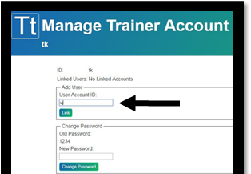
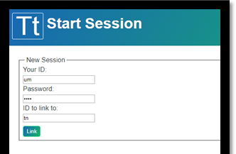
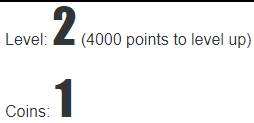

How to use TicTrainer™
At the moment, Microsoft® browsers (Internet Explorer and Edge) don't display TicTrainer™ correctly. Try another browser.
TicTrainer™ only works when a “user” (a person with tics) and a “trainer” (e.g. a parent, a psychologist or a physician) are logged on at the same time. Each has a separate account and password. During training, each is watching a separate browser window, so usually they log in on different devices (e.g., Johnny at a computer and Mom on her smart phone). However, it is possible to log in the user and the trainer on two separate browser windows on the same computer. Please follow the detailed instructions in the table below. The user has to follow the instructions on the left, and the trainer the instructions on the right.
| User | Trainer | |
|---|---|---|
1. First, create an account for the user.From www.TicTrainer.com, the user first clicks “Register.” |
1. Separately, create an account for the trainer.In a separate browser window from the user, the trainer goes to www.TicTrainer.com and clicks “Register.” |
|
|
Then click “User.” |
Then click “Trainer.” |
|
|
Then supply the information requested and click on “Create Account.”
This step need only be done once, but you’ll need to record your user
account ID and password for future sessions. |
Then select the trainer's birth year and type in a self-selected password.
This step need only be done once, but you’ll need to record your
trainer account ID and password for future sessions. |
|
2. Now allow the trainer to access your user account.Go to Manage Account and log in on that page with your new (user) account name and password. |
2. Now link the user to your trainer account.Go to Manage Account and log in on that page with the trainer account name and password. |
|
|
In the “Add Trainer” box, type the Trainer Account ID (your trainer will
need to supply you that information; usually it will start with the letter “t”). Press the "Link" button. The trainer’s ID should now appear above the “Add Trainer” box. Then click on “Return to Home.” This step need only be done once. |
In the “Add User” box, type the Account ID for the person with tics (“user”).
You will need that information from them; usually it will start with the letter “u”.  Click on “Link.” You should now see the user’s ID appear near the top of the window. Then click on “Return to Home.” This step need only be done once. |
|
3. Start the session from the user’s side.Click on “New Session” and log in again. In the “ID to link to” box, type the trainer’s ID (usually it will start with the letter “t”). Then click “Link.” Wait for the Trainer to log in and start the session. (It will not actually “Link” or start the session until the trainer also logs in.) |
3. Start the session from the trainer’s side.Click on “New Session” and log in again. In the “ID to link to” box, type the user ID (usually it will start with the letter “u”).Then click “Link.” Once the “user” is also logged in, a “Start” button will appear that you can use to start the session. |
|
4. What the user does during a training session.The screen shows a big number (like 3292, below) and a smaller number (like +36). The big number shows how many points you have earned on the current level. The smaller number is the reward rate, showing how fast you are earning points. The longer you go without a tic, the higher that number gets, and the faster you earn points. Every time you tic, the screen flashes red, and the smaller number resets to zero, but you keep the points you have earned.
Below these numbers your current level is shown. At higher levels, you have to go longer between tics to get points, but you get more points. When you qualify for the next level, the screen flashes green. Your points reset to zero for the new level, but you also earn “coins” that track your long-term progress.  |
4. What the trainer does during a training session.Every time you see or hear a tic, click on the “Tic Detected” button. If a long time passes between tics, the program will think you aren’t paying attention, and will end the training session early. To prevent this, click on the “I’m here” button before the timer bar reaches the right edge.Continue the session for the pre-arranged duration (e.g. 15 minutes), then click the “End Session” button. You can also use the “End Session” button to end the session early if you need to; this will save the user’s points and level. |